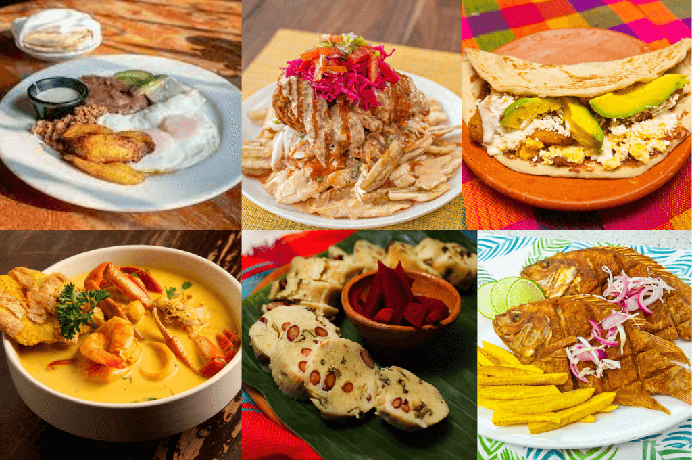

Copán Ruinas

Descubre el legado de la civilización maya en uno de los sitios arqueológicos más importantes de Honduras.
Conocer másBienvenido a nuestro portal de ecoturismo. Aquí encontrarás información sobre los mejores destinos y rutas para disfrutar de la naturaleza hondureña.
Descubre el legado de la civilización maya en uno de los sitios arqueológicos más importantes de Honduras.
Conocer más
Explora bosques nublados, senderos naturales y la montaña más alta de Honduras.
Conocer más
Disfruta de playas caribeñas, arrecifes coralinos y una extraordinaria diversidad marina.
Conocer más
Descubre la rica cultura y gastronomía de Honduras a través de nuestras rutas culturales y experiencias culinarias.
Conocer másBiodiversidad: Honduras posee una gran diversidad de ecosistemas, incluyendo bosques tropicales, bosques nublados, manglares y arrecifes coralinos.
Clima: Predomina el clima tropical, con variaciones según la altitud y la región del país.
Moneda: La moneda oficial de Honduras es el Lempira (HNL).
Ubicación: Honduras se encuentra en América Central, entre Guatemala, El Salvador y Nicaragua, con costas en el mar Caribe y el océano Pacífico.